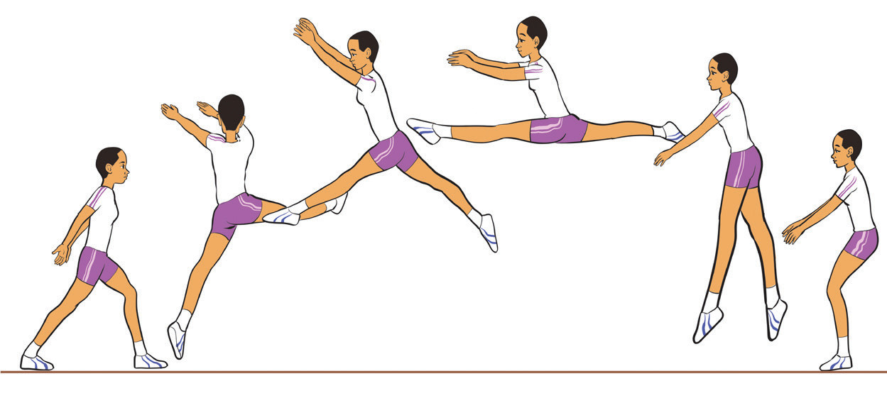

(i)
Stand tall with feet together, arms by your sides, then slightly bend your knees and engage your core preparing to jump;
(ii)
Push off the floor explosively with both feet, and kick one leg forward and the other leg backward in a smooth motion;
(iii)
As you leap, extend both legs into a split position, while keeping your body upright, arms engaged, and toes pointed for elegance, Figure 4.43; and
(iv)
Land on one foot, slightly bend your knee, while the opposite leg in front keeping your body upright and balanced.

a b c d e f